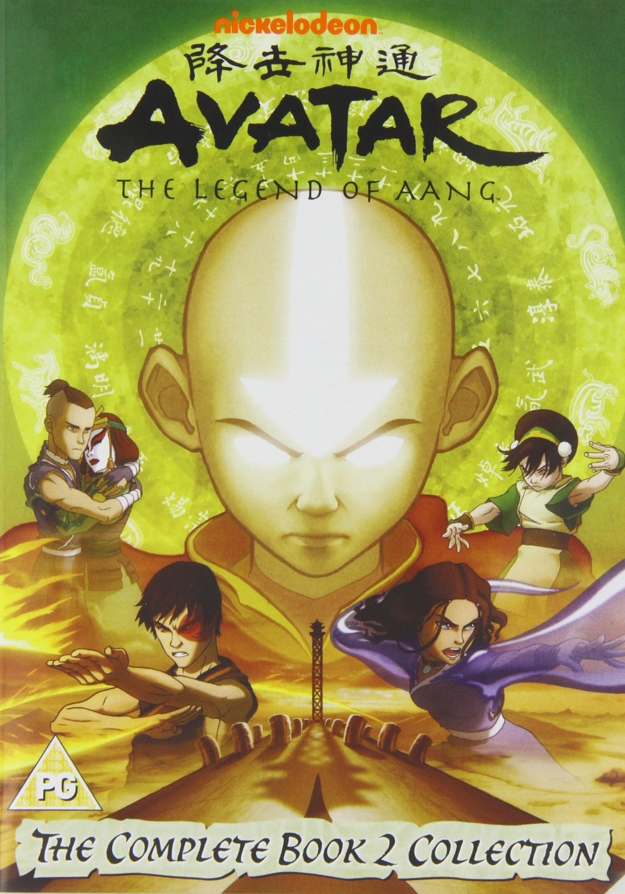
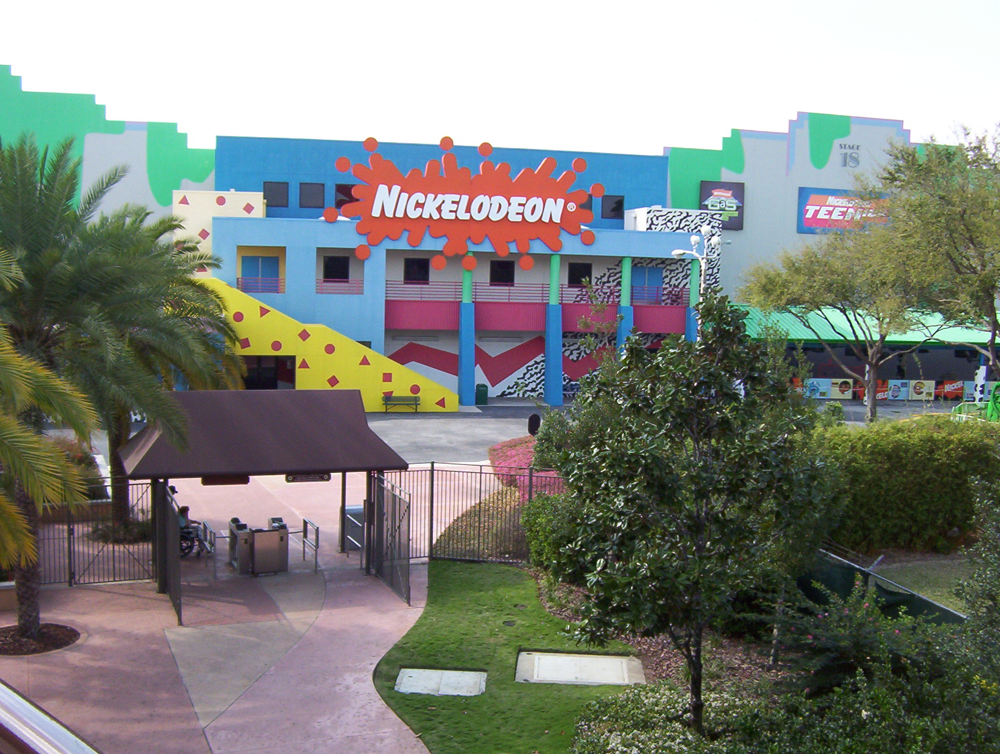

Avatar: la leyenda de Aang, se tarta de como Aang y sus amigos tratan de derroptar la nación
del
fuego que quiere conquistar el mundo, y como Aang aprende todos los elementos y aprende a
ser un buen
Avatar.
Esta imagen enseña a Aang y a su equipo, que
tambien son sus amigos.
Avatar la leynda de Aang
23/11/21
De que trata
Se trata de que Aang y sus amigos salvan al mundo de la nación de fuego.
Princesa Yue
Admirante Zhao
Ozai
Suki
Azula
Tío Iro
Zuko
Toph
Katara
Aang
Esta es la portada de Avatar la leyenda Aang
Links a paginas de referencia
10/01/22
Con estos links te puedes meter a diferentes páginas para ver mas sobre avatar la leyenda de
aang.
Los links son de Wikipedia, Wiki Fandom, Nickelodion, Netflix y Rotten tomatoes
Este video sobre la leyenda de Tang relata su vida en la serie y como crece, pero, pienso que
es
importante mencionar lo que hay detrás de la serie, es una serie que por arriba esta muy
divertida
y padre, que; sí lo esta. Pero tiene una parte mucho mas profunda y con temas muy reales
como es
cuando le dicen a Aang que sera Avatar y la presión que sufre el por eso, o cuando despierta
del
hielo y se enter a de la muerte de su nación se culpa a si mismo, y no solo es Aang el que
tiene
problemas de la vida real sino uno de los mas notables es el principe Zuko que lo que
realmente
quiere es el amor de su papa y hara lo que sea para conseguirlo, y también sufre con las
expectativas
que todos los demás tienen para el y su futuro, y no es hasta el final hasta que se da
cuenta que el
es el maestro de su futuro y no nadie mas.
Mi opinion es, que esta es una serie muy buena que representa problemas de la vida real de
forma
divertida, es una serie muy buena en parte a su historia de la superficie y la emocional
Información
23/01/22
¿De que trata?
Esta serie tiene una historia principal en donde la base es que Aang y sus amigos
quieren prevenir que la nación del fuego conquista todo el mundo
La serie empieza cuando Aang despierta de estar congelado en el hielo por 100 años
dejando al mundo sin su Avatar, y Katara y Sokka que son hermanos lo encuentran y pronto
se ponen en su camino para que Aang aprenda a controlar los cuatro elementos: Aire,
Agua, Fuego y Tierra
¿Porque dicen que esta tan buena?
Son diversas cosas, en parte es que los personajes son relacionables y van
creciendo durante la serie, y en otra parte vemos que cada temporada es original,
con cada temporada teniendo una formula nuevay muy pocos episodios de
relleno a diferencia de otras series.
Franchise writers of all stripes could stand to learn something from how neatly
Avatar lines up the audience's expectations, then satisfies them in a way that still
manages to feel unexpected.
Sonia Saraiya, Vanity Fair
This... was a fantasy narrative meticulously crafted from a obvious love of anime and
Eastern philosophy.
Hayden Childs, AV Club
Historia
Avatar: la leyenda de Aang, se estreno el 21 de Febrero del
2005, con
3 libros o temporadas y 61 episodios.
El siguiente video explicara mas profundo el trama de la primera temporadade
Avatar: La leyenda de Aang
La temporada 2
16/02/22

Aqui hablare sobre de que se trata la segunda temporada.
En el siguiente video explico sobre de que trata la temporada dos de Avatar: la
leyenda
de Aang.
En esta entrada no use ninguna página de referencia.
¿Anime?
2/jun/22

Avatar
Avatar aunque no lo párezca no es una serie de anime, es una serie Estaodunidense que toma
inspiracion de Asia, especialmente de la religion budista. El anime es japones y dado que esta
serie es de los Estados Unidos de America esta serie no es anime, para ser anime la serie tiene
que ser japónesa y esta serie fue hech por Nickelodion Studios basada en los Esados Unidos como
ya hab{ia mencionado la pra ser anime tiene que ser japonesa y aunque tenga el mismo estilo de
dibujos no es anime ya que es de los Edtsdos Unidos y aunquese baseen ese estilo deseries, no
ees anime.
 Información
Información